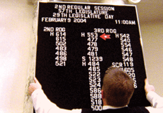

|
STATE LEGISLATURE
Frederick Wiseman | USA 2007 | 217 Min.
Format: 16mm
Material: 16mm
Originalsprache: Englisch
Drehbuch: Frederick Wiseman
Kamera: John Davey
Schnitt: Frederick Wiseman
Ton: Frederick Wiseman
Produktion: Idaho Film Inc.
Verleih: Freunde der Deutschen Kinemathek, Berlin
Idaho liegt im Nordwesten der USA. In den 35 Wahlbezirken des Rocky Mountain Staates werden jeweils zwei Abgeordnete und ein Senator gewählt, die in einer Legislaturperiode von zwei Jahren den Haushalt und die Gesetzgebung, kurz die Geschicke Idahos in den Händen haben. Frederick Wiseman hat sie beobachtet, in Ausschuss-Sitzungen, in Anhörungen, beim informellen Gespräch auf den Fluren, bei Begegnungen mit den Wählern und Lobbyisten aller Art. Was durch Wisemans Art der Beobachtung und Montage, ohne Interviews und Kommentar deutlich wird, ist der mühselige zwischenmenschliche Prozess demokratischer Entscheidungsfindung selbst. Ganz nebenbei zeigt er ein Kondensat des weißen, christlichen Amerikas, das für viele als heilsbringender Werte-Exporteur an Attraktivität verloren hat. (Anna Hoffmann)
Frederick Wiseman, geb. 1930 in Boston. Jurastudium, Armeedienst, Rechtsanwalt in Paris, ab 1959 Professor für Recht und Medizin in Boston. Seit 1967 Regisseur einer Vielzahl von Dokumentar- sowie zwei Spielfilmen.
Filme (Auswahl): Titicut Follies 1967 | High School 1968 | Law and Order 1969 | Juvenile Court 1973 | Meat 1976 | Sinai Field Mission 1978 | Model 1980 | Missile 1987 | Near Death 1986 | Central Park 1989 | Zoo 1993 | Public Housing 1997 | Domestic Violence 2001 | The Garden 2004 | State Legislature 2007
zurück
|